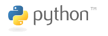

We're working on preparing a special section of CS10 for those of you who are particularly interested in programming and how it can be applied outside of this class. For the last three weeks of this semester (starting the week of 11/15), we are going to be teaching entirely optional sections outside of the normal class period that will give you an introduction to two key languages in a professional programmer's toolbox.
Python
Python is hailed as being both an easy language to learn and a particularly fun language to program in. It is a common language to use for software development in industry and is being used by companies like Industrial Light and Magic, Google, NASA, Yahoo! and Nokia to build major projects. It was also used to create parts of popular games like Civilization 4 and EVE Online. Python supports all four major programming paradigms, but we will be focusing on the imperative and object-oriented styles.
Scheme
Scheme is one of the most popular functional programming languages in use today and, like Python, is also incredibly easy to learn. Scheme follows the functional paradigm most naturally, and places a heavy emphasis on concepts like recursion and higher-order functions. It is also the language used in CS61A, the first class in Berkeley's computer science curriculum for CS majors. While its current applications are more pedagogical, Common Lisp (the dialect of Lisp most frequently used in industry) found a following in the AI community, and Scheme-like languages are still used by many open-source programs, such as GIMP (for image processing). We will demonstrate some object-oriented techniques as well.
Each section will be two hours long and will be composed of 50% casual lecture and 50% project building and application of the ideas we discuss. The topics for each section haven't been completely nailed down yet, but this is roughly the pattern that we will be following:
- Surprise! You Already Know [Python / Scheme]!: This session will compare the focus language with BYOB and discuss how to do most of the things you've been learning about all semester. You will be surprised at how much you already know and understand!
- [Python / Scheme] in Action: We will cover some language-specific features that can put a smile on your face and talk about how to apply them in a useful and efficient way.
- Making Real-World Projects with [Python / Scheme]: The grand finale will have a larger focus on project-building. We will introduce some of the major programming paradigms in each language and then dedicate the rest of the time towards starting to build a useful real-world project.
| Monday | Tuesday | Wednesday | Thursday | Friday |
|---|---|---|---|---|
Surprise! You Already Know Python! [Nov 16: 6:30pm - 8:30pm] (slides) (video) |
Surprise! You Already Know Scheme! [Nov 17: 6:30pm - 8:30pm] (slides) (video) |
|||
Scheme in Action [Nov 22: 6:30pm - 8:30pm] (slides) (video) |
Python in Action [Nov 23: 6:30pm - 8:30pm] |
|||
Making Real-World Projects with Python [Dec 7: 6:30pm - 8:30pm] |
Making Real-World Projects with Scheme [Dec 8: 6:30pm - 8:30pm] (slides) (video) |